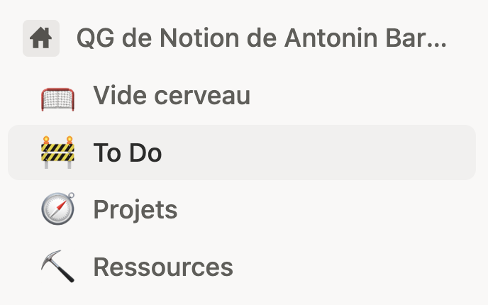
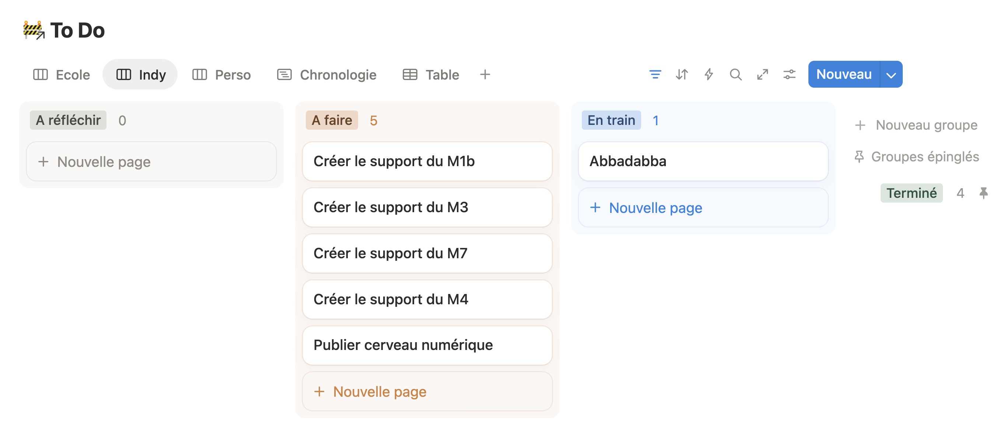

Mini-formation asynchrone · 60 min
Ton cerveau est un processeur. Pas un entrepôt.
0 / 5 modules validés
Tu as probablement 47 onglets ouverts.
Trois emails non traités depuis lundi. Une correction qui attend depuis jeudi. Dans le couloir entre deux cours, une idée que tu vas oublier d'ici la sonnerie. Bienvenue dans la tête d'un enseignant en 2026.
Si tu travailles beaucoup avec le numérique (emails, Teams, veille technologique, différents groupes,...), je mets un billet de 5 euros sur le fait que, parfois, tu te sens fatigué, dépassé, désorganisé, proche du burn out!
Ce qui t'épuise, ce n'est pas d'avoir trop à faire. C'est de passer de l'énergie à tout retenir en même temps. En 2001, David Allen a publié une méthode pour confier ça à un système externe et libérer l'attention. Elle s'appelle Getting Things Done. Elle tient toujours — et elle est faite pour le numérique par design : pas d'outil imposé, juste des flux de décision.
C'est ma digestion personnelle de cette méthode que je vais te présenter ici. Une digestion qui s'est faite sur plusieures années de pratique quotidienne. Une digestion qui fait que ce n'est plus cette même méthode, mais un dérivé. Je rends honneur à celui qui en est le point de départ mais je ne revendique pas appliquer sa méthode (Ça, c'est dit!)
Ce parcours t'amène en 5 modules à comprendre la méthode et à la tester sur tes propres items. Un seul principe à tenir à chaque étape : ton cerveau est fait pour avoir des idées, pas pour les stocker.
L'idée centrale de GTD n'est pas neuve. Bluma Zeigarnik l'avait documentée dès 1927 : les tâches inachevées restent en boucle dans l'esprit — même quand on travaille sur autre chose, même pendant le sommeil. Chaque item non capturé consomme de la bande passante mentale, en silence, en permanence.C'est ce qui crée la fatigue!
Alvin Toffler avait trouvé le mot pour ça en 1970 : l'infobésité. Un flux d'informations supérieur à la capacité de traitement. En 2026, ce n'est plus une exception — c'est l'état de base. Mais pour un enseignant, le flux a une nature particulière : multidirectionnel, non maîtrisé, impossible à planifier. Élèves, parents, direction, collègues, formations, ressources — tout arrive en même temps, sans hiérarchie claire, souvent pendant qu'on fait autre chose.
David Allen a conçu sa méthode avant les smartphones, avant Slack, avant les 47 onglets permanents. Et c'est paradoxalement ce qui la rend plus pertinente que jamais : il avait compris que le problème n'était pas la quantité d'informations, mais l'absence d'un système auquel on peut faire confiance. Sans cette confiance, le cerveau reprend tout en charge. Et s'épuise.
La méthode que je vais te montrer est tool-agnostic : elle définit des flux de décision, pas des applications. Ta boîte mail devient ton inbox. Ton gestionnaire de tâches devient ta liste de prochaines actions. Ton calendrier reste ton calendrier. Pas besoin de tout réinventer — juste de comprendre comment articuler ce que tu utilises déjà.
Comment j'ai conçu cette micro formation?
D'abord, comme je te l'ai dit, j'ai pratiqué pendant des années avec différents outils numériques. Je suis désormais dans une version stable depuis une bonne année. Mais y a-t-il quelquechose de définitivement stable dans la vie? Probablement pas, sauf si c'est mort depuis assez longtemps...
Ensuite, je me suis retrouvé face à des collègues au bout du rouleau, épuisés par le numérique... car ils n' avaient pas de méthode. Ils s'en remettaient à un organe biologique trop limité pour faire face à ce flux constant d'information. Cela m'a donné envie de partager.
J'ai pensé à différentes formes, avant d' arriver à la conclusion qu'il n'y avait pas besoin de quelque chose de très compliqué. Du texte avec plusieurs niveaux pour ceux qui veullent aller plus loin, des exercices d' application, un exemple concret de transfert dans la réalité.
Je me suis reposé sur Claude.ai pour construire ce site et les exercices interactifs (Le vibe coding, nouvelle compétence enseignante...) Claude a créé le squelette du texte, j'ai vérifié qu'il était bien fonctionnel et j'y ai ajouté la chair de l'expérience vivante
Vider la tête, pas la remplir ailleurs.
Tu penses à quelque chose entre deux cours. Tu te dis que tu vas t'en souvenir. Deux heures plus tard — plus rien, juste le stress de sentir confusément que tu es passé à côté de quelque chose d'important...
Ce n'est pas un problème de concentration. C'est un problème d'architecture. Tant que l'item reste dans ta tête, ton cerveau le garde en mémoire active — et paye pour ça, en continu, sans que tu t'en rendes compte. Il tente de retenir, et ça le fatigue...
La réponse du cerveau numérique est radicale dans sa simplicité : un "vide cerveau"" unique. Un seul endroit où tout atterrit — idée, demande, obligation, ressource à explorer. Pas 12 listes éparpillées entre l'agenda, les mémos, les post-its et la mémoire. Une seule. Le vide cerveau n'est pas une liste de tâches : c'est une zone de transit. Elle vide la mémoire de travail, elle ne stocke pas. Le cerveau le sait et se détend.
Règle opérationnelle : la capture doit coûter moins de 5 secondes. Sinon, tu ne le feras pas. Et ton cerveau le sait.Il s'agit donc d'avoir ce vide cerveau à portée de la main...
Et pour cela, quoi de mieux que le smartphone? (Même si tu pourrait aussi utiliser un calepin ou une tablette de cire...)
A toi de trouver ton vide cerveau: page Notion, document texte (facilement accessible), boite mail (Attention à ne pas tout mélanger), Google keep,logiciel de prise de note propre à ton smartphone,... L'important est que tu puisses capturer en moins de 5 secondes.
Le mécanisme derrière ce vide cerveau est ancien. En 1927, la psychologue Bluma Zeigarnik observe que les serveurs d'un café berlinois se souviennent parfaitement des commandes non encore servies, mais oublient presque immédiatement celles qu'ils ont livrées. Elle en tire un principe — connu aujourd'hui comme l'effet Zeigarnik : les tâches inachevées restent en boucle dans l'esprit jusqu'à leur résolution ou leur externalisation.
Appliqué à ton quotidien, ça donne : chaque item qui traîne dans ta tête est un processus en arrière-plan. Il consomme des ressources cognitives que tu ne vois pas mais qui ralentissent tout le reste. L'externalisation dans un vide cerveau de confiance — le mot est important — libère ces ressources.
Pourquoi de confiance ? Parce que si tu captures dans un système auquel tu ne fais pas confiance (un carnet que tu ne relis jamais, une note vocale que tu ne ré-écoutes jamais), ton cerveau ne lâche pas l'item. Il sait qu'il va devoir y revenir tout seul. Le vide cerveau doit être fiable, accessible en permanence, et vidée régulièrement (on verra ça au module 04). Crois moi, ce vide cerveau couplé à cette confiance vont produire un effet que tu percevras immédiatement quand ton système sera en place.
Huit items viennent d'atterrir dans ta tête. Sélectionne tous ceux à capturer, puis valide.
« Corriger l'interrogation sur les fake news »
Tâche concrète avec livrable attendu. Archétype du truc à capturer pour ne pas le re-penser 12 fois dans la journée.
« Je suis stressé par la réunion de demain »
Un état émotionnel n'est pas un item pour ton vide cerveau. Si ce stress cache une action (préparer un document, relire des notes), capture l'action — pas le feeling.
« M'inscrire à la formation référant IA de l'Edulab »
Engagement futur avec date potentielle. Ton cerveau le garde en boucle jusqu'à externalisation — même quand tu dors.
« Utiliser le site des Rochdur sur l'esprit critique »
Le doute est le signe exact qu'il faut capturer. L'inbox n'accueille pas que des tâches — aussi les ressources et les intentions floues.
« Le numéro de salle de la réunion est le B204 »
Information factuelle sans action future. Le vide cerveau capture ce qui demande une décision ou un suivi — pas les faits que tu peux vérifier en 2 secondes si besoin.
« Rendez-vous avec le chef pour le virage numérique »
Engagement interpersonnel prioritaire. Ce que tu en feras (préparer, planifier) vient après — au module suivant.
« Fouiller le site de la forge des communs numériques éducatifs »
Intention vague = candidat parfait pour le vide cerveau. Le flou tourne en boucle. On décidera plus tard ce qu'on en fait.
« Contacter Benoit Naveau pour une formation Canva »
Action simple — mais « simple » ne veut pas dire « qu'on n'oublie pas ». La capture systématique protège des petits trous qui deviennent de grosses embrouilles.
Décider maintenant ce que tu refuses de décider plus tard.
Un vide cerveau plein qu'on ne trie jamais, c'est juste un déménagement du chaos...
Capturer sans clarifier, c'est déplacer le problème — pas le résoudre. La clarification, c'est l'étape qui transforme un item flou en décision nette. L'idéal c'est de clarifier ton vide cerveau une fois par jour Après... La théorie est ce pays dans lequel tout se passe bien... Pas de culpabilité si tu n'y arrives pas toujours! Pour clarifier, tu peux utiliser un arbre de décision simple, invariant, et légèrement irritant parce qu'on ne peut pas tricher.
Pour chaque item de ton vide cerveau, une seule question d'abord : est-ce actionnable?
Non → poubelle, référence, ou « Un jour peut-être ». Fin.
Oui → faisable en moins de 2 minutes ? Oui → fais-le maintenant. Non → est-ce toi qui dois le faire ? Non → délègue. Oui → planifie dans ton agenda ou ajoute à une de tes listes de choses à faire.
L'arbre de décision paraît bureaucratique. Il est en fait une protection contre toi-même. Chaque fois que tu reportes une décision (« je verrai plus tard »), tu t'engages à la prendre deux fois : une fois maintenant pour décider de reporter, une fois plus tard pour décider vraiment. Appliqué à 30 items par semaine, ça fait 60 micro-décisions au lieu de 30.
La règle des 2 minutes est un cas particulier : elle exploite le fait qu'organiser une tâche de 2 minutes (la noter, la classer, la replanifier) coûte souvent plus que la faire. Donc si c'est faisable tout de suite et que ça dure moins de 2 minutes, le calcul rationnel est : fais-le. Pas demain. Maintenant.
La contrainte qui fatigue au début, c'est que tu dois vraiment appliquer l'arbre à chaque item. Pas faire semblant. Pas re-scanner ton vide cerveau en diagonale. Item par item, décision par décision. Au bout de quelques jours, ça devient un réflexe. Au bout de deux semaines, la clarification prend 10 minutes par jour et ton vide cerveau ne grossit plus. C'est tout l'effet recherché.
4 items de ton vide cerveau. Pour chacun : actionnable ou non — et quelle suite ?
Fiche 1 / 4« Contacter Benoit Naveau pour une formation Canva » — tu as son mail, tu sais exactement quoi lui dire.
« Corriger l'interrogation sur les fake news » — environ 1h30 de travail, rendu attendu vendredi.
« Fouiller le site de la forge des communs numériques éducatifs » — idée notée en réunion, aucune deadline, aucun projet associé.
« Utiliser le site des Rochdur sur l'esprit critique » — tu l'as déjà testé, c'est une ressource pédagogique solide pour tes cours.
Ranger la décision au bon endroit pour ne plus la reprendre.
Clarifier, c'est décider. Digérer, c'est traiter la décision pour ne plus avoir à la reprendre.
Une fois qu'un item est clarifié, il va dans l'une des 5 listes. Pas 12. Pas une liste par projet, par contexte, par humeur du lundi. Cinq. C'est la structure minimale du système — et c'est délibéré.
Prochaines actions · tâches concrètes à faire (outil : Todoist, Things, TickTick).
Projets · tout ce qui demande plus d'une étape (outil : Notion, Obsidian, document texte, kanban,...).
Calendrier · ce qui est lié à une date ou une heure précise. (outils:votre calendrier numérique préféré)
Un jour peut-être · idées sans date d'engagement.(outil : Notion, Obsidian, document texte, kanban,...)
Référence · info utile sans action associée. (Bases de données Notion, drive,... )
Une précision qui change tout : une tâche ne va pas dans Projets parce qu'elle est importante. Elle y va parce qu'elle exige plusieurs étapes.
Le piège classique avec la liste Projets, c'est d'y accumuler des intitulés qui sonnent bien (« Refonte du cours de 2nde », « Mise en place de la veille numérique ») sans jamais définir leur prochaine action concrète. Résultat : tu ouvres la liste, tu relis les titres, tu ne sais pas par où commencer, tu fermes la liste. Le projet ne bouge jamais. Personnellement, j'adore utiliser des tableaux kanban pour décomposer les projets. Si tu ne sais pas ce que c'est, je te laisse chercher...
Règle importante : chaque projet actif doit avoir une et une seule prochaine action définie, écrite, concrète. Pas « avancer sur la refonte », mais « lister les 3 compétences à garder du cours actuel ». Une action que tu peux commencer maintenant sans avoir à re-réfléchir.
Autre nuance : la frontière entre Référence et Un jour peut-être est souvent floue, et c'est normal. Règle opérationnelle : si tu gardes l'item parce que tu veux en faire quelque chose, c'est "Un jour peut-être". Si tu le gardes parce qu'il peut servir au cas où, c'est Référence. Quand tu hésites vraiment, tranche — et ajuste à la revue quotidienne.
6 items clarifiés. Digère les en déplaçant chacun dans la bonne liste.
0 / 6 rangés
Vide cerveau — à digérer
La revue hebdomadaire n'est pas un luxe. C'est ce qui tient le système debout.
Sans entretien, GTD ne se dégrade pas lentement. Il se retourne contre toi.
Les items s'accumulent dans les inboxes, les projets dérivent, ta liste de prochaines actions devient un cimetière de bonnes intentions. Et à un moment, tu n'ouvres plus le système — parce qu'ouvrir le système te donne mauvaise conscience. (Et la mauvaise conscience, c'est mal!)
C'est pour ça que la revue quotidienne est une pièce importante de la méthode. Une petite heure par semaine, trois objectifs : vider tout ce qui est resté dans le vide cerveau depuis trop longtemps, actualiser les projets et leurs prochaines actions, anticiper la semaine à venir.
Elle ne sert pas à tout faire. Elle sert à tout voir — pour pouvoir choisir plutôt que réagir.
On s'imagine que la Weekly Review sert à organiser. En fait, son rôle est plus subtil : elle sert à restaurer la confiance dans le système. Parce que le cerveau numérique ne fonctionne que si tu crois que ton inbox et tes listes sont à jour. Le jour où tu doutes, ton cerveau reprend la main — et tu repars de zéro.
La revue quotidienne est un rituel à protéger. Même moche, même bâclée, mieux vaut la faire courte et régulière qu'ambitieuse et ratée. Voici une checklist simple : digérer le vide cerveau (mail, note mobile, carnet), parcourir la liste Projets et s'assurer que chaque projet actif a une prochaine action, parcourir Prochaines actions pour virer ce qui est mort, parcourir « Un jour peut-être » pour ressortir ce qui est devenu mûr, parcourir le calendrier à deux semaines.
Quand c'est fait, tu n'es pas forcément plus occupé — tu es plus clair. C'est ça qui change dans la semaine qui suit.
10 activités ci-dessous. Sélectionne toutes celles qui font partie d'une revue hebdomadaire correcte, puis valide.
Choisir en confiance. Pas au hasard, pas par devoir.
ton cerveau numérique ne te dit pas quoi faire. Il te donne un cadre pour choisir.
Ce que la méthode met en face de toi, à chaque instant où tu dois décider quelle tâche attaquer, ce sont quatre critères à appliquer dans l'ordre :
1. Contexte — de quoi j'ai besoin pour faire ça ? (un laptop, un
téléphone, être seul, avoir du réseau…)
2. Temps disponible — combien de minutes devant moi ?
3. Énergie — quel est mon niveau en ce moment, vraiment ?
4. Priorité — parmi ce qui reste après les 3 premiers filtres, qu'est-ce qui a le plus d'impact ?
L'ordre n'est pas décoratif. Un bon système s'adapte à ton état réel, pas à ton état idéal où tu serais toujours en forme, concentré, avec 3 heures devant toi.
Cela peut paraitre un peu idiot mais n'oublie pas de célébrer intérieurement à chaque fois que quelquechose disparait de ta liste de tes prochaines actions parce que tu l' as accomplie. Personnellement, j' ai un petit YOUHOU! intérieur que je déclenche au moment de faire disparaitre d'une de mes listes. Faire cela a un vrai effet émotionnel: tu te donnes un petit shoot d'hormones gratos, tu te valorises à travers tes réalisations... Ça n'a l'air de rien mais, fait de manière répétée, ça contribue au bien être. (Mais c'est toi qui vois si ça te semble trop perché ou pas!)
Si la priorité arrive en quatrième position et pas en première, c'est pour une raison documentée. Roy Baumeister a montré en 2011 que la volonté est une ressource limitée — elle se dépense dans la journée et s'épuise. Tu le sais d'ailleurs sans avoir lu Baumeister : tes choix de 18h ne ressemblent pas à tes choix de 9h.
Un système qui te dit systématiquement « fais la tâche la plus prioritaire maintenant » ignore ton état réel. Résultat : soit tu y arrives (rarement), soit tu procrastines (souvent), soit tu fais semblant (le pire). Allen inverse la question : qu'est-ce qui est faisable dans mon état actuel, et parmi ça, qu'est-ce qui est le plus utile ?
C'est contre-intuitif au début. Ça peut sembler complaisant (« je choisis la tâche facile parce que je suis fatigué »). C'est en fait l'inverse : tu arrêtes de te mentir sur ton état, tu fais ce qui est vraiment faisable, et tu avances réellement au lieu de rester coincé à regarder la tâche prioritaire que tu n'as plus l'énergie d'attaquer. C'est aussi une manière de te respecter et de contribuer à ton estime de toi (C'est important ce truc là!)
Clique une tâche à gauche pour la sélectionner, puis clique le contexte qui lui correspond à droite.
0 / 4 paires trouvées
Tâches
Contextes GTD
Avant d'adapter, comprendre. Je te recommande de tester un cerveau numérique dans sa forme la plus orthodoxe avant de l'aménager — parce que les frictions que tu ressentiras au début sont souvent des révélateurs de tes habitudes, pas des défauts de la méthode.
L'engagement minimal pour 2 semaines est volontairement court : un vide cerveau unique pour toutes tes captures (choisis ton outils), 10 minutes par jour pour clarifier ce qui est entré, une revue hebdomadaire que tu fixes un jour de la semaine — même incomplète, même courte.
L'objectif n'est pas la perfection. C'est l'observation. Qu'est-ce qui résiste ? Qu'est-ce qui soulage immédiatement ? Où le système craque — et pourquoi ?
Le cerveau numérique est un cadre, pas un dogme. Tiago Forte l'a bien montré dans Building a Second Brain (2022) : l'hybridation et la simplification du système permettent de l'intégrer durablement dans des pratiques numériques réelles — et dans une vie réelle, avec ses irrégularités.
Après tes deux semaines, l'adaptation peut porter sur plusieurs axes : réduire les 5 listes à 3 si certaines restent vides, intégrer ton cerveau numérique dans un outil que tu utilises déjà plutôt que d'en installer un nouveau, ajuster la fréquence de revue.
Ce qui ne s'adapte pas, par contre : la capture systématique, la clarification de chaque item, la revue régulière. Ce sont les trois invariants. Les supprimer, c'est rater le coche — et revenir au chaos initial six semaines plus tard.
Règle pour choisir : le système le plus simple que tu utiliseras vraiment bat le système parfait que tu abandonneras.
| Étape | Outil | Usage |
|---|---|---|
| Capturer | Boîte mail · Notion · Obsidian | Inbox texte rapide |
| Capturer (mobile) | Google Keep · Apple Notes | Capture < 5 sec en déplacement |
| Clarifier / Digérer | Todoist · TickTick · Microsoft To Do · tableaux kanban | Prochaines actions, projets, délégation |
| Calendrier | Google Calendar · Outlook · Calendrier Notion | Engagements datés uniquement |
| Référence | Notion · Obsidian · Drive | Ressources sans action associée |
| Weekly Review | Template Notion / Obsidian | Checklist hebdomadaire |
Pour démarrer sans réfléchir trop longtemps : Google Keep comme vide cerveau, Todoist pour les prochaines actions, Google Calendar pour les dates. Trois outils. Pas plus.
Mon cerveau numérique tient dans quatre pages principales Notion. Pas plus.


Ces adaptations ont émergé après avoir utilisé la méthode telle quelle. Ce n'est pas un détail. Un musicien qui commence le piano par l'improvisation jazz ne développe pas le swing — il développe des habitudes approximatives qu'il devra désapprendre. Les gammes d'abord, l'improvisation ensuite.
Teste cette méthode dans sa forme standard pendant deux semaines. Pas pour être orthodoxe par principe — pour comprendre ce que chaque friction signifie. Quand tu seras prêt à adapter, tu sauras exactement ce que tu modifies et pourquoi. Ce n'est pas la même chose qu'adapter par tâtonnement dès le départ.
Tu viens de parcourir les 5 étapes pour t'aider à comprendre comment créer ton cerveau numérique. Aucune n'est compliquée à comprendre. Les mettre en oeuvre est aussi simple.
Maintenant, la partie intéressante commence.
À partir d'aujourd'hui, teste la méthode telle quelle pendant 2 semaines. Une inbox unique (ta boîte mail suffit). Dix minutes par jour pour clarifier. Une Weekly Review vendredi — même moche, même courte.
Pas d'adaptation prématurée. Pas de nouvel outil à installer. Juste la méthode, deux semaines, pour observer ce qui résiste et ce qui soulage. On en reparle ensuite.
Ton cerveau est un processeur.
Pas un entrepôt.